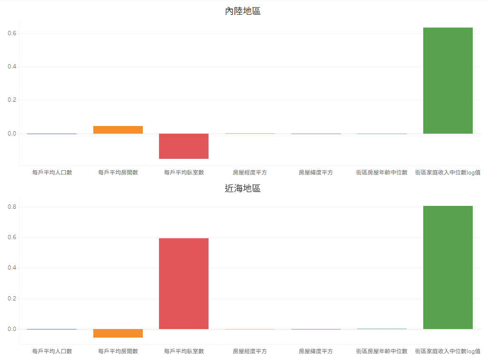
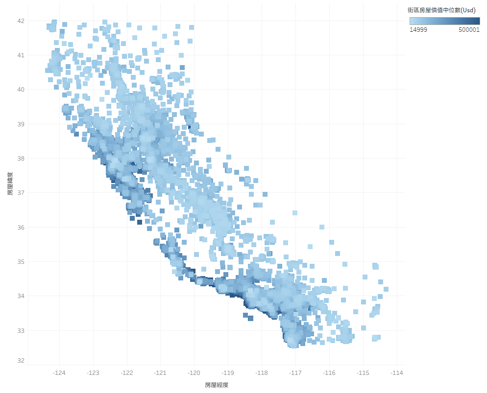
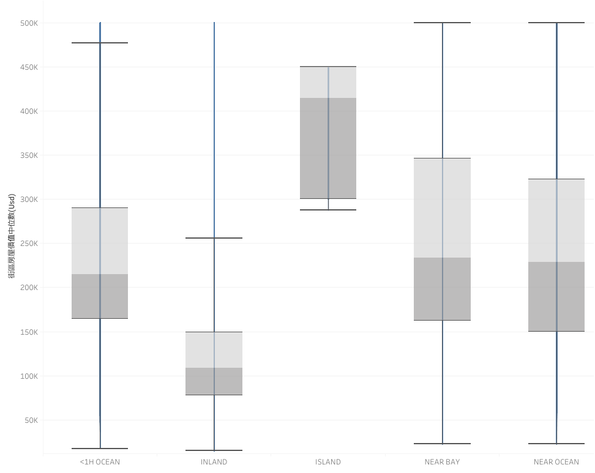

緣起
本專案原擬以台灣近期「限貸令」政策為背景，建構房價預測模型以貼近在地市場情境。
然受限於政府資料開放平台之數據完整性，最終決定採用 Kaggle 提供之 1990 年美國加州房價數據集為分析基礎。
此類高品質的結構化數據，在具備數位化平台的房仲企業中具高度可取得性，確保了本研究架構在實務應用上的高度可行性。
模擬商業需求情境：
本分析以加州某房屋仲介分店為應用場景。近期受政策調整影響，市場買氣趨於觀望；
分店長擬藉由具數據實證之分析報表，強化第一線業務的說服力，藉此挽回因政策波動而猶豫的潛在客戶。
資料獲取與準備
資料來源
從Kaggle上下載的一份資料集，
其來源是Aurélien Géron 於2017年出版的
《Hands-On Machine Learning with Scikit-Learn and TensorFlow》。
資料集包含 1990 年加州人口普查的資訊，有提供下列市場因素之資料：
| 欄位名稱 | 說明 |
|---|---|
| 房屋經度 | 衡量房屋所在位置的西側程度；數值越高，房屋越東。 |
| 房屋緯度 | 衡量房屋所在位置的北側程度；數值越高，房屋越北。 |
| 街區內房屋年齡中位數 | 街區內房屋的年齡中位數；數值越低，房屋越新。 |
| 街區內房間總數 | 街區內房屋的房間總數。 |
| 街區內臥室總數 | 街區內房屋的臥室總數。 |
| 街區內人口總數 | 街區內居住的總人數。 |
| 街區內家庭戶數 | 街區內家庭戶數，即居住在同一住宅單元內的人數。 |
| 街區內收入中位數 | 街區內家庭收入的中位數（以1萬美元計）。 |
| 街區內房屋價值中位數 | 街區內房屋價值的中位數（以美元計）。 |
| 房屋與海洋的距離 | 房屋與海洋/海的距離，非數字資訊，而是分<1H OCEAN、INLAND、ISLAND、NEAR BAY、NEAR OCEAN這些分類。 |
資料預處理
在特徵工程階段，透過散點圖審視自變數與應變數（房價）之關係：街區人口、家庭戶數、收入中位數、屋齡及房間數等特徵均呈線性趨勢，
故直接引用；房屋經緯度則呈現顯著 U 型分布，為捕捉其非線性特徵，對其進行二次項（平方）轉換，使模型具備擬合二次函數曲線之預測能力。
初步執行多變數迴歸分析後，診斷發現殘差圖呈現明顯的扇形擴散（異方差性），
不符迴歸分析基本假設。為修正此問題，採取以下優化策略：
-
應變數（房價）Log 轉換：房價在實務上多呈乘法關係（如：收入 × 地段 × 稀缺性），
為校正高價區與低價區誤差尺度不一的現象，透過對數轉換將其轉化為線性模型可處理的加法形式，以穩定誤差分佈。 -
當地收入 Log 轉換：考量收入對房價的邊際影響隨數值增加而遞減（如月薪 3 萬至 4 萬的邊際效應遠大於 30 萬至 31 萬），
採對數處理以修正非線性關係，確保模型能正確反映收入特徵。 -
總量變數轉換為比例指標：將街區之房間總數、臥室總數及人口總數除以「家庭戶數」，
將規模總量轉換為「每戶平均」指標。此舉更貼近生活品質對房價的實質影響力，提升模型解釋力。
經二次處理後，模型殘差仍存在異方差現象。經進一步對「房屋與海洋距離」執行子樣本分析（Subsample Analysis），
診斷發現僅 INLAND（內陸）組別之殘差分佈符合隨機性假設。
考量不同地理區位存在顯著的空間異質性，本研究最終決定將數據依據地理特徵拆分，
分別訓練「內陸地區」與「近海地區」兩套獨立的迴歸模型，以達成最優擬合度並確保預測結果之穩健性。
圖表與分析結果
多變數迴歸分析
內陸地區模型R2為0.5035，代表對整個內陸地區有50.35%的解釋力；
近海地區模型R2為0.5080，代表對近海地區中低價位市場的房價有50.8%的解釋力，詳細原因接下來會說明。
預測的準確性及穩定性

圖一、房價實際值 vs 預測值散點圖
依據「圖一、房價實際值 vs 預測值散點圖」之分析結果，內陸地區子樣本展現優異的線性擬合能力。
實際值與預測值之對數分佈均衡且對稱，未觀測到明顯系統性偏差，
證實模型已精確捕捉內陸地區之房價特徵，具備高度可靠的解釋力。
相較之下，近海地區的預測表現則呈現顯著的「天花板效應」（Ceiling Effect）。觀察散點圖可見，
當房價達到特定閾值時，實際值出現明顯截斷現象（Censored Data），於圖表上方形成一條水平線。
由於原始資料集採房價中位數計，此現象暗示高價區樣本受限於紀錄上限，導致模型在極高價區間產生結構性偏誤：
當房產實質價值超越紀錄上限時，預測值仍隨特徵變數上升，實際值卻停滯於閾值。
因此，模型對近海地區之解釋力存在以下分層差異：
- 中低價位市場：散點分佈仍具明確趨勢，顯示模型能有效辨識並捕捉該區間之房價影響因子。
- 極高價位區間：受限於資料紀錄上限限制，預測值與紀錄值產生脫節，導致此區間之預測可靠度有所下降。
模型符合統計假設之情況

圖二、房價殘差圖
依據「圖二、房價殘差圖」之分析結果，內陸地區之殘差觀測點於零軸（Zero Line）上下呈現均勻且隨機的分佈。
此特徵證實模型具備變異數同質性，且未偵測到顯著的非線性模式，
說明模型對內陸地區房價之解釋已臻完善，其餘殘差主要源於隨機波動而非結構性缺失。
相較之下，近海地區之殘差診斷顯示出顯著的結構性偏誤。在高預測值區間，殘差呈現明顯向右下方傾斜之線性規律。
此現象具體量化了「價格上限截斷」對模型穩定性的影響：由於實際值受限於閾值固定不變，當模型預測值隨特徵變數持續升高時，
誤差（實際值 - 預測值）隨之呈現等比例的負向擴張。這證實該區間之預測失效並非源於隨機因素，而是受限於輸入資料之特徵分佈受損。
各市場因素影響狀況

圖三、房價迴歸係數圖
| 市場因素 | 內陸地區迴歸係數 | 內陸地區p value | 近海地區迴歸係數 | 近海地區p value |
|---|---|---|---|---|
| 每戶平均人口數 | -0.0006 | 0.0121 | -0.0046 | <0.0001 |
| 每戶平均房間數 | 0.0457 | <0.0001 | -0.0569 | <0.0001 |
| 每戶平均臥室數 | -0.1521 | <0.0001 | 0.5943 | <0.0001 |
| 房屋經度平方 | 0.0005 | <0.0001 | 0.001 | <0.0001 |
| 房屋緯度平方 | -0.0014 | <0.0001 | -0.0035 | <0.0001 |
| 街區房屋年齡中位數 | -0.0016 | <0.0001 | 0.0042 | <0.0001 |
| 街區家庭收入中位數log值 | 0.6334 | 0 | 0.8057 | 0 |
表一、預測房價迴歸係數及對應p value
「圖三、房價迴歸係數圖」可用於評估各項市場因素對房價的正負向影響及其權重強度。
針對內陸與近海兩大市場，其係數特徵可依影響程度區分為以下層級：
內陸地區模型分析：
- 第一層級：街區家庭收入中位數具備極高之正向影響力，為房價最核心的驅動因素。
-
第二層級：每戶平均臥室數呈現負向影響，此結果具反直覺性，推測可能因臥室數量增加導致單一空間面積縮減，
進而降低居住品質；未來若能納入房屋總面積數據，將有助於釐清此變數之因果關係。 - 第三層級：每戶平均房間數具些微正向影響。
- 第四層級：每戶平均人口數、經緯度平方項及房屋年齡中位數雖具統計顯著性，但影響程度極為微小。
近海地區模型分析：
- 第一層級：街區家庭收入中位數與每戶平均臥室數均具顯著正向影響。相較於內陸地區，近海市場對居住休息空間的需求強度顯著較高。
- 第二層級：每戶平均房間數呈現些微負向影響，推測原因同樣可能源於空間配置過度擠壓。此現象仍需後續透過空間面積資料進一步驗證。
- 第三層級：每戶平均人口數、經緯度平方項及房屋年齡中位數之影響力微弱。
綜合市場洞察與建議： 不論地理區位為何，家庭收入中位數對房價均具主導性影響。
若該區經濟動能持續成長，房價預期仍具上升空間。在考量房產流動性（轉售難易度）時，
房間與臥室的配置數量為關鍵考量因子。
此外，數據顯示房屋年齡中位數對近海地區房價具正向連動性，
若以資產保值為首要目標，近海地區不失為一項具參考價值的選擇。
地理區位房價熱點

圖四、空間熱力圖
透過「圖四、空間熱力圖」，買方可結合地段偏好與預算配置，高效鎖定理想物件。
圖表顯示，低房價物件主要集中於東側內陸及北端區域；沿海之西北至東南帶狀走廊則呈現高中價位並存之特性，
其中中價位物件除集中於該帶狀中心外，亦廣泛散布於帶狀各處。
此外，若針對特定地理位址有尋屋需求，亦可直接透過熱力圖進行精確比對與定位。
房屋與海洋的距離及房價分佈

圖五、房價盒鬚圖
| 地區 | Q1 | Q2 | Q3 | IQR | 最大值 | 最小值 |
|---|---|---|---|---|---|---|
| <1H OCEAN | 164.3 | 215 | 289.5 | 125.2 | 447.2 | 17.5 |
| INLAND | 77.6 | 108.7 | 149 | 71.4 | 255.9 | 14.999 |
| ISLAND | 300 | 414.7 | 450 | 150 | 450 | 287.5 |
| NEAR BAY | 162.5 | 233.8 | 346.1 | 183.6 | 500.001 | 22.5 |
| NEAR OCEAN | 150 | 228.75 | 322.55 | 172.55 | 500.001 | 22.5 |
表二、各類型地區之四分位數（單位：K USD）
由於「房屋與海洋距離」屬類別變數，不直接納入迴歸模型，
故採用「圖五、房價盒鬚圖」分析不同距離類型對房價分佈之影響，藉此掌握市場整體趨勢與價格位階。
依據四分位數檢視各街區房價中位數之分佈：INLAND（內陸） 地區位階最低，中位數約為 100K USD；
<1H OCEAN（近海 1 小時內）、NEAR BAY（近灣區） 與 NEAR OCEAN（鄰近海洋） 之價格區間相仿，
中位數均座落於 200K 至 250K USD 之間；而 ISLAND（島嶼） 地區之價格位階最高，中位數約達 400K USD。
從「表二、各類型地區之四分位數」中之四分位距（IQR, Q3 – Q1）觀察，INLAND 地區之房價分佈最為集中，
<1H OCEAN 地區次之；其餘地區則呈現較大的房價波動與市場差異。
 圖六、分析架構圖
圖六、分析架構圖